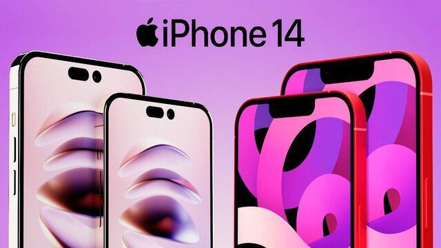

ONLINER

- Габариты: 146,7×71,5×7,80 мм, 172 г
- Дисплей: 6,1", Super Retina XDR, 2532×1170, 460 ppi, 60 Гц
- Процессор: 6-ядерный Apple A15 Bionic
- Камера: 12 Мп, f/1,5 (основная) + 12 Мп, f/2,4 (ултраширокоугольная); 12 Мп, f/1,9 (фронтальная)
- Память: 6 ГБ оперативной, 128/256/512 ГБ постоянной
- Батарея: до 20 часов воспроизведения видео
- Связь: Lightning (USB 2.0), Gigabit LTE, 5G, Wi Fi 6 (802.11ax) с технологией MIMO, Bluetooth 5.3, UWB, GPS, ГЛОНАСС, Galileo, NFC, eSIM
- Цвет корпуса: Midnight, Purple, Starlight, (PRODUCT)RED, Blue
Технические характеристики iPhone 14:
Традиционно для Apple аппарат iPhone получился ровным по всем параметрам. Тут нет явных косяков или крутейших фишек. Может быть, они есть в Pro-версии, но сомневаюсь.
В очередной раз убедился, что iPhone создан для того, чтобы забыть про технические параметры. Собственно, Apple так и рассказывает о смартфоне – понятным для всех языком: у нас стоит самый быстрый процессор, у нас отличные камеры, классный экран, приличное время работы. Мол, а больше вам ничего не надо: вот доступный компактный iPhone 14, есть чуть больший 14 Plus, продвинутый компактный 14 Pro и самый большой — 14 Pro Max.